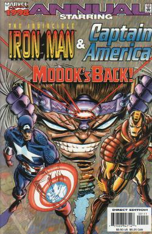

M.O.D.O.K.
M.O.D.O.K. (Mental Organism Designed Only for Killing) was just another A.I.M. agent when the Supreme Scientist decided that he needed a "volunteer" for one of his experiments. Twenty-four hours later he was transformed into M.O.D.O.K. After being freed from the alteration chamber M.O.D.O.K. killed his would be bosses and took over the leadership of AIM.
Captain America #133- flashback- George struggles and shouts as the AIM scientists put him into the alteration chamber. He shouts that he did nothing wrong, but the scientist says that the Supreme One needs a volunteer. The Supreme One says that he is just another nameless agents of AIM, but when he has finished he will be a living breathing computer. He will become their greatest weapon. The next day the experiment is over. They dub him MODOK the Mental Organism Designed Only for Killing. MODOK’s head is monstrously large. He shouts, “What have you done to me?” The Supreme One says that he is now the most powerful brain on the planet. MODOK thinks to himself that he is more powerful than even they know. MODOK then killed the Supreme Scientist and took over as AIM’s leader
Tales of Suspense #93- behind the scenes- Captain America manages to find the submarine that is AIM’s secret base. However they also spot him coming, and with an invention of theirs they capture Cap by filling his air supply up with gas. Cap wakes up bonded to a base plate that uses sheer magnetic force. One of the scientists says that MODOK welcomes him to the world of AIM reborn. AIM brings in the girl that Cap came to rescue, an agent of SHIELD. She is secretly wearing anti-polar coveralls so when she touches Cap he is freed of the magnetic force. Cap and the girl get away, but the girl says that she cannot leave until she learns about MODOK. They overhear some of the scientists fearing MODOK’s judgement. One says that they were the ones that created MODOK, and that he was supposed to be their ultimate weapon, yet now almost overnight they are under his leadership. The others tell him to be quiet or MODOK might hear. MODOK addresses the scientists. He says that there are still two invaders on the ship and that they must be captured. MODOK says that failure will result in death for all. AIM does recapture them, and the girl is brought before the screen that MODOK speaks through. MODOK orders her to walk onto a part of the floor. The girl’s will is no longer her own and she sinks into the part of the glowing floor.. AIM says that it is time to destroy Captain America.
Tales of Suspense #94- Another scientist stops him and says that maybe Captain America might be useful to them in opposing MODOK. None of them have the guts to fight him, but they can hope Cap wins. They radio MODOK and ask him if he wishes to study Captain America before he is killed. MODOK says that he does. Cap phases through the platform he was being held on. Cap finds himself in another space, but at least he can move around. Cap gets up and looks around, but is stunned when he is hit by MODOK’s brain beam. Cap looks up to see MODOK floating next to the SHIELD girl. MODOK says that once he was nothing but a guinea pig for the scientists of AIM, but they did their job too well and now he is their master. The SHIELD agent warns Cap that MODOK’s brain is his weapon. She says that he can use it to control, fight, or destroy. MODOK says that he senses that he could never control either of them because they are both willing to die for what they believe in. MODOK says that he has no use for either of them. MODOK starts shooting mind beams at Cap. The first type blows Cap off his feet. The second is a stun shock beam. The third MODOK rips up the steel floor and launches pieces of it at Cap. MODOK sees that Cap’s shield is protecting him so he next uses a heat beam. AIM is watching the entire fight and decides that now is the time to rebel against MODOK. AIM fires upon MODOK and destroys his hover chair. MODOK says that he must not die like a helpless being. As Cap captures the AIM scientists MODOK shoots a brain beam up to a satellite that triggers detonator. As Cap and AIM leave in an escape sub the headquarters sub explodes.
Captain America #119- flashback- MODOK had shielded himself with a mental globe of force protecting him from the exploding submarine. MODOK then emits a sonic beam to some of his agents that did not rebel against him. MODOK is brought back, restored, and returned to leadership.
Captain America #118- behind the scenes- AIM scientists work quickly to destroy the power of the Cosmic Cube that has been stolen from them or else MODOK will be displeased. One says that they must destroy it or they will have to answer to MODOK with their very lives. They succeed in making their device. One of the scientists says that all that remains is phase three.
Captain America #119- MODOK yells at the scientists that whoever stole the Cosmic Cube from them must never be allowed to use the power against them. He orders them to begin the third phase. He says that they must hurry while the world is unaware that MODOK lives. MODOK has them activate the catholite block and the Cosmic Cube fades away, but not before the Red Skull can use it one last time to teleport away.
Captain America #120- Nick Fury subliminally gets Steve Rogers to apply for a job teaching at a particular college. The college has been in the grips of a rally that is organized by Mike Baker. Mike Baker however is unknowingly following the advice of those that work for AIM. Steve changes into Captain America to stop a giant student fight. MODOK is infuriated. As he watches Cap on his view screen he says that Captain America was not supposed to be there, and that he must not be allowed to ruin another of his carefully laid plans. MODOK has his two agents on campus carry out their mission now or it will have to be aborted. MODOK wants Paul Fosgrave taken hostage because of his brilliance in the field of atomic equations, but he wants it to look like the demonstrators are taking him hostage so their demands are met. Cap comes to realize that Baker is in a trance. When he sees the two “students” that are taking Fosgrave hostage holding a gun that is anything but ordinary he realizes what is going on. Cap stops the AIM agents from getting away.
Captain America #124- MODOK watches as Captain America beats up two AIM agents. MODOK says he knew that they would fail, but that Captain America will soon learn his motives. MODOK says that when they return he wants A-14 eliminated, and A-12 prepared for the cyborg experiment. Later MODOK offers Assassin-12 the option of death or the cyborg experiment. A-12 chooses the cyborg experiment. MODOK says that he has created the cyborg experiment specifically to deal with Captain America. A-12 becomes a cyborg. MODOK says that only he can control or recharge him. MODOK sends his new cyborg out to rob a bank. It punches in the vault door. Cap sees him from SHIELD headquarters, but the cyborg is too fast for him to get there as A-12 leaves with armfuls of cash. Back at AIM’s base MODOK tells the cyborg to throw the money away because it means nothing. Cyborg agrees that the only important thing is that he passed the test. MODOK orders the cyborg full charged because next he will face Captain America. MODOK calls into SHIELD as Fury with a message to meet for Captain America. Cap arrives and manages to short out the cyborg. MODOK was watching the fight, but ran for it when SHIELD arrived.
Captain America #130- behind the scenes- Once again MODOK sends out two agents into a college to fuel the already growing dissent amongst the student body. MODOK’s guys get the students ready to cause violence. MODOK’s man spots both Captain America and Baron von Strucker’s undercover man talking. Captain America appears on a television to speak in favor of the students. Strucker is infuriated and sends Bartoc’s Brigade after Cap.
Captain America #132- flashback- When MODOK hears that Cap defeated them he remarks that Strucker will be furious and want revenge. MODOK mentally locates Strucker. As he sees Strucker vowing revenge. MODOK then sends thought waves across the Atlantic to the kingdom of Dr. Doom. MODOK tells Doom that he has a task for him. Doom says that MODOK must have lost his senses. MODOK forms his task in the form of a challenge. MODOK challenges Doom to build a robot that would defy detection by Captain America himself. After Doom creates the robot of Bucky Barnes MODOK teleports him across the Atlantic.
Captain America #131- behind the scenes- MODOK then implants a thought within Strucker’s head to find a look a like of Bucky to trap Cap with.
Captain America #132- Within the secret base of AIM, MODOK watches as his plan unfolds. MODOK remarks how easy it is for him to deceive everyone. MODOK turns off the television talking about Cap’s recently restored partner Bucky. MODOK tunes in the vision of “Bucky” as he sits upon the back of Cap’s motorcycle. MODOK takes control of the robot and attacks Cap. MODOK then boosts “Bucky’s” desire to commit homicide. MODOK figures that no matter who wins the fight he will win the battle. Either Bucky will kill Cap, or Cap will be forced to kill his partner leaving him mentally weak and more able for MODOK to brain wash him. However Doom made the Bucky robot too good and all his old memories implanted stop Bucky from killing Cap. MODOK tries to stop the automatic destruct button, but he is too late, Bucky explodes and Cap realizes the truth.
Captain America #133- MODOK yells at the AIM scientists in the room with him. MODOK says that the Bucky android failed and that they both know the price of failure. The scientists say that they only carried out his orders and that they have remained loyal. They beg for mercy. MODOK says that they dare to speak to him of mercy when he has suffered more at the hands of AIM than anyone. MODOK vaporizes them. MODOK says that he could kill Captain America the same way, but it would be too easy and painless for him. MODOK says that when he thinks of Cap’s good looks and sees himself that he hates Cap all the more. MODOK brain beams the mirror. MODOK says that Cap is everything that he is not, and that he must destroy him. MODOK mentally searches out Cap and forms a new plan to destroy him. MODOK stops all his agents and gives them a new top priority mission. MODOK creates a new Alteration Chamber. MODOK then creates life and a monster out of lifeless clay. MODOK sends his new creation, the Bulldozer, out after Cap. The three story tall Bulldozer starts wrecking the Lincoln Tunnel. Bulldozer makes his way to Harlem and starts to destroy the buildings. The people of Harlem cheer because they hate the buildings. MODOK is happy because the people are mad at Cap for trying to stop it. MODOK says that downtrodden people are perfect for exploitation. He says that wherever there is slums, poverty, and racism is where his breeding ground for his own form of evil is. MODOK heads to the scene for his greatest triumph. Cap gets a device that blocks MODOK’s commands to Bulldozer. The Bulldozer starts to head straight for MODOK. Cap confronts MODOK. MODOK tries to blast Cap, but Cap blocks it with his shield. Bulldozer is confused and starts freaking out and destroys the building they are in. MODOK doesn’t get out in time and the place comes down on him and Bulldozer.
Fantastic Four: The World’s Greatest Comic Magazine #4- The “boss” sends out some goons to spray paint some “hate whitey” graffiti in order to help him start a race war. Falcon tries to stop them, but AIM agents attack with the help of a large Mechanoid robot. Just when it looks like Falcon is in trouble Captain America shows up. AIM agents spot Thing overhead and shoot him down thinking that he saw them. MODOK watches from an alleyway. He says that he was hoping that he wouldn’t have to reveal himself, but it seems that he will be needed to win. MODOK blasts Thing, Captain America, and Falcon unconscious all with one mind blast. With Thing’s last bit of strength he fires the flare up into the air to signal the other Fantastic Four. MODOK blasts Thing again, and says that he will pay with his life for his brazenness. Human Torch arrives just as AIM is loading the unconscious heroes onto the ship. AIM says that they can’t defeat Human Torch alone. MODOK asks if has to do everything. Torch dodges MODOK’s blasts long enough for the heroes to regain consciousness. Captain America says that to win they must defeat MODOK. Suddenly a concussion ray comes in and knocks out all the AIM agents. The heroes notice that MODOK is gone.
Sub-Mariner #48- flashback- As the building collapses on MODOK he erects a mental force shield. He then uses a mind-force to blast his way to a tunnel below. He then boards a monorail manned with synthetic humans that had been waiting two years there for just such an emergency. An hour later MODOK is aboard an atomic submarine and headed towards his New Orleans base.
Sub-Mariner #47- Doctor Doom recruits the amnesiac Namor to be his ally. They fly towards an A.I.M. base to find a fantastic weapon. Doom says that M.O.D.O.K. is dead, and that if he were alive even Doom would be given pause for this mission. MODOK watches them and hears that Doom thinks him dead. MODOK says that he has a score to settle with Doom and Namor, and that he has the perfect bait…the Cosmic Cube.
Sub-Mariner #48- Doom winds up kidnapping a girl Namor cares about to force him to get him the Cosmic Cube. M.O.D.O.K. watches as Namor and Doom get through his defenses. MODOK says that for all his intelligence Doom is a fool. He says he is sure that they will prove worthy adversaries, but he can’t imagine how they think that his death was real. MODOK recalls his escape and says that he will never trust another human now that he has his android army. MODOK prepares his army to fight. For some reason Namor was unconscious. When he comes to he finds doors in the ocean floor open for him. Namor enters to find himself confronted by MODOK and his android army. MODOK orders that Namor be taken down to the Cosmic Cube.
Sub-Mariner #49- Namor fights MODOK’s androids, but as he tries to fly up the androids grab his ankled wings. Held in place MODOK mind blasts Namor unconscious. MODOK says that Namor is going to learn the true meaning of nightmare. He orders him taken to the Cosmic Cube. MODOK then contacts Doom and tells him that he will meet with him within the hour or he will kill Namor. Doom enters because he feels some affinity for Namor. MODOK greets Doom. Doom says that he hasn’t come to talk, and that MODOK knows what he wants. MODOK mindblasts Doom and says that he wants what he cannot have. MODOK says that Doom has blundered. Doom says that if he has it is because he is a loyal man. Doom meets and matches MODOK’s beam with one of his own. MODOK summons his androids to fight Doom. Below a dry and weakened Namor is tied a chair. He says that MODOK plans to use the Cosmic Cube to mind transfer into his body. Namor tricks the android into bringing him some water. Namor gets wet and breaks free. Namor then frees the Cosmic Cube so that neither Doom nor MODOK can have it. Doom finally destroys all of MODOK’s androids, and then he turns to fight MODOK. MODOK teleports away to an undisclosed location. MODOK says that for all his supposed sophistication at heart Doom is still a peasant. The freed Namor fights through more of MODOK’s men. He finds MODOK and confronts him. Namor picks MODOK up and throws him into a machine. Namor and Doom flee the base before the freed Cosmic Cube explodes.
Iron Man #74- MODOK sits in the AIM base. He demands all the known information on the Black Lama. MODOK says that he is getting to be too dangerous. One operative says that Black Lama has no past that they are aware of. That he opened up a meditation school in North India. Recently Black Lama has reappeared offering a Golden Globe of Power to super-villains who battle each other. Mandarin has fought the Yellow Claw, and Lama had Melter, Man-Bull, and Whiplash attack Iron Man. Doctor Doom, Red Skull, and Fu Manchu all turned down participation. MODOK says that his sources say that both Magneto and the Leader have vanished. MODOK says that he must be approached soon, and must form a response for the Black Lama. Suddenly Black Lama stands before MODOK. MODOK decides to accept his challenge. Lama vanishes and one of the AIM agents asks why he accepted. Instead of answering MODOK simply kills the agent for questioning him. MODOK tells the others to be sure that all the defenses are ready. Elsewhere MODOK’s opponent the Mad Thinker escapes from jail. Thinker knows that MODOK has all of AIM to fight for him, but he has nobody. Thinker takes over Iron Man’s armor. He forces Iron Man to fight MODOK. While Iron Man is repulsing the AIM agents MODOK gets into his giant battle suit. MODOK tries to step on Iron Man, but Iron Man catches his foot and flips him over. MODOK’s right hand is destroyed. Iron Man then destroys the central support for the building. The whole place crashes down onto MODOK. Iron Man flies away, but MODOK flies up after him and grabs him. Iron Man punches MODOK, but Thinker sees that the two of them are getting closer to him. Thinking Iron Man betrayed him he freezes his armor. MODOK grabs Iron Man and follows the beamed radiation that is controlling Iron Man’s armor. MODOK crashes into Thinker’s hideout. MODOK says that first Thinker dies and then the Yellow Claw.
Iron Man #75- MODOK tosses Iron Man aside and moves to attack Thinker. Thinker quickly pulls a lever releasing a giant android warrior. The android starts to pound MODOK. MODOK mento-blasts the android. He probes the android’s mind and turns it off. MODOK throws the body of the android aside. MODOK grabs the Thinker and kills him. MODOK drops Thinker’s body and then looks around for Iron Man. MODOK thinks about killing Iron Man, but decides that it might help him against the Yellow Claw if he figured out how to control Iron Man’s armor. MODOK disengages from his huge body. MODOK manages to gain control of Iron Man. Black Lama appears again before MODOK and tells him that he wants him to further battle right now. Black Lama teleports MODOK and Iron Man outside the Yellow Claw’s fortress. MODOK sends out Iron Man against the Yellow Claw. Iron Man defeats his robots, but then Yellow Claw releases a monster that feeds upon metallic substances. Iron Man defeats the monster and then charges the Yellow Claw. MODOK crashes in from the opposing wall. They go to crush them together, but then Yellow Claw seemingly vanishes. MODOK and Iron Man ram each other and fall unconscious. Yellow Claw was just an illusion, but the real Claw now opens the trap door beneath MODOK. MODOK falls and is seemingly dead. Claw goes to kill Iron Man to find he is a robot. The real Iron Man is still the prisoner of the real Thinker. MODOK had defeated a Thinker robot.
Iron Man annual #4
Avengers vol. 3 #17-flashback-
Ms. Marvel #5
Ms. Marvel #7- MODOK holds prisoner an unmasked and uncostumed Ms. Marvel. MODOK greets Ms. Marvel. He says that he was the head of AIM until he was deposed in the “War of the Super-Villains”. He says that he has just regained control of AIM’s west coast operations. He says that with Ms. Marvel’s help he will rule AIM again, and that through AIM he will rule the world. She says that he has to be kidding, but when she tries to escape she is shocked by her restraints. MODOK says that she has already helped him. Carol spots another woman in her costume. MODOK says that he has found that much of Ms. Marvel’s powers are tied into the alien electronic webbing in her costume. He says that they will find its secrets and soon have an army of Ms. Marvels. MODOK tries to have the suit tested, but when his agent tries to fly she falls to the ground. She starts making excuses, but MODOK says that he will next test the costume’s ability to project an energy field that can withstand a tachyon beam. He says that his brain beam isn’t that strong but it will do. MODOK blasts the agent unconscious. Ms. Marvel mocks MODOK knowing that the circuits burnt out in a previous fight. MODOK orders the Mind-Ripper activated in order to make her his loyal servant. Inside her mind MODOK becomes a handsome man that she can worship like a god. They free her and she starts fighting AIM. As she prepares to strike MODOK he orders her to drop her weapon. MODOK asks who her master is. She replies that MODOK is her master. MODOK orders her to kill the agent in her suit. She starts to but manages to break MODOK’s control. She hits MODOK and suddenly finds that she can fly without her costume. She grabs the agent in her costume. She puts it on and starts tearing through the AIM agents. MODOK blasts her but then runs. AIM jumps her as she follows. She knocks them off and MODOK blasts her. Ms. Marvel escapes through a hole in the wall caused my MODOK’s brain-beam. MODOK tells the agents not to follow, but to maintain their hideout and fix the wall. He says that he is far from finished with her.
Ms. Marvel #9
Ms. Marvel #10
Marvel Team-Up #104- M.O.D.O.K.'s scouts find the Savage Land and manage to drop a homing signal before Kazar gives them the boot. Later on a ship to the Savage Land M.O.D.O.K. is discovered by Bruce Banner and another of the ship's crew. Modok stun blasts Bruce and the man. Modok orders Bruce be kept under heavy sedation. Bruce is stunned Modok knows him. When they find the homing signal Modok orders that the façade appearance of the ship be dropped. The equipment and prisoners are brought ashore. Modok tells Bruce that he and the others will serve as the bait "that will lure the beasts". Modok orders the release of the somna-gas. Modok knocks out a T-Rex with the gas. Kazar tries to help but is knocked out also. Later Modok orders Bruce and Kazar thrown into the ship's pit with all the dinosaurs Modok captured. Modok wants to subject the dinosaurs to the same process that altered him, and create himself an army to control. After defeating the dinosaurs the Hulk leaps through the ceiling onto the deck's ship. Modok orders them to be shot with the somna-cannon, but Hulk leaps next to it. Modok blasts Hulk. Hulk gets up and throws the cannon at Modok. Modok mindblasts it back onto the Hulk. Modok comes in close. Hulk grabs Modok's suit and rips him out of it revealing Modok's tiny body inside the suit. Hulk advances as Modok continues his mindblast. Zabu hits Modok from the side knocking him out. Modok is kept asleep with his own somna gas as he is carried onto a ship to be taken to the authorities.
Marvel Two-In-One #81
Marvel Two-In-One #82
Marvel Two-In-One #96- MODOK decides to join forces with a bunch of other villains to try and kill the Thing as he recuperates from the beating he sustained against Champion. A group of heroes of course stops them though just how is not pictured.
Incredible Hulk vol. 2 #287- MODOK breaks into the maximum security Project Earthfall. He takes over the top-secret base sector by sector. MODOK says he has come "that which is contained within Project Earthfall". MODOK says he needs a new servant. MODOK finds the inner door and melts it. MODOK uses his headband and puts everyone in the room to sleep. Modok then goes to the cryogenic core. Modok then finds General Ross holding a gun on him. Modok says that he and Ross are not enemies. Ross wants to use the contents of the cryogenic chamber to kill the Hulk, and Modok wants it to set against AIM. Ross was ready to commit treason to kill the pardoned Hulk. Modok thinks to himself that he enjoys seeing a man betray all he is a symbol of, but then tries to usage any guilt Ross might have by saying that it isn't treason to want to kill a monster. Modok says he will help Ross achieve his goal. He melts the ice in the cryogenic chamber revealing the Abomination.
Incredible Hulk vol. 2 #288- The Abomination screams as MODOK's rays reach him. Ross holds the gun on MODOK and says that if he is going to commit treason he wants to make sure MODOK is going to carry out his plan correctly. He wants the Hulk to be taken out first. MODOK says that's fine, but only because it amuses him to help a soldier turn traitor. Abomination says he doesn't want to fight the Hulk again because it is too painful. MODOK uses his mind beam to raise Abomination out of the cryogenic pit. He says that his mind probe reveals that Abomination was beaten so badly last time that he now fears the Hulk. General Ross is ticked because he committed treason and Abomination won't follow through. MODOK says that is nonsense. He will "re-educate this coward to the ways of power". MODOK then mindblasts Ross so that it looks like he resisted him. MODOK laughs as he and Abomination fade from the base. Later, Modok tells the Abomination to get up and fight. Abomination says he doesn't want to be hurt again. Modok says that he will show Abomination the true meaning of pain. The room starts to attack Abomination. Abomination says he would rather die than feel that kind of pain again. MODOK says that the pain will never end until he fights. Abomination freaks and rips the room apart. He says he will fight anyone but the Hulk. Modok tells Abomination that things are different as Banner's mind controls the Hulk now. Modok says that he will cause the Abomination to grow stronger the more he fears MODOK.
Incredible Hulk vol. 2 #289- The rogue blue AIM troops attack the base MODOK is in. Modok says that he has spent so much time with the Abomination that he didn't see this attack coming. Modok mindblasts the blue rogues yet he notices that a mind block is up preventing him from mind reading not only the rogues, but his own men. All AIM troops stand against him and start trying to kill him. AIM created Modok to work for it, not to rule it, and many feel that AIM has stagnated under his leadership. MODOK erects shields to protect himself from the blasters. He flies up high and blasts the rogues below. Modok thinks to himself that there might be too much firepower. He blasts a hole in the roof and flies out. Modok says he will return with the Abomination at his side and they will rue the day they dared defy him.
Incredible Hulk vol. 2 #290- Bruce finds the seaside base where Abomination has taken Kate. He runs into MODOK outside the base. MODOK mindblasts the images of Abomination delivering Kate to AIM. MODOK tells Bruce that they are going to use Kate to create a new MODOK. Hulk and MODOK attack the base together. Hulk smashes AIM while MODOK kills them with his mindblasts. As Bruce goes to save Kate MODOK takes the time to mindblast Abomination for his treachery. He says Abomination will never be left alone again. Bruce opens the door to find AIM saluting Ms. MODOK. MODOK is immediately attracted to Ms. MODOK. AIM tries to order Ms. MODOK, but the post hypnotic suggestions of Kate no longer affect the mind of Ms. Modok. MODOK takes Ms. MODOK as his bride. Bruce objects saying that creature is not Kate and shouldn't speak for her. MODOK tells Hulk to watch how he talks about his bride. MODOK blasts Hulk and demands an apology on his knees. Abomination tells Hulk to give in or MODOK will kill him. MODOK says they should give Hulk a preview of his fate. MODOK shoots Abomination with a steady green beam that blasts his atoms apart. Ms. MODOK takes exception with killing and strikes out at MODOK. MODOK blasts her into the machine that created her. Bruce slams MODOK damaging his hoverchair. MODOK blasts him saying he doesn't realize the gift he gives Hulk before he leaves. MODOK blasts a hole in the roof and leaves. Ms. MODOK returns to her form as Kate.
Captain America #313- Bushmaster and Diamondback enter a seemingly abandoned AIM submarine. They find the air inside fresh. They head to the bio-laboratories where they find an armorless MODOK lying on a table feeding. He blasts at them. Diamondback severs MODOK’s feed tubes. MODOK thinks to himself that he must escape without energy to fight. MODOK reaches his chair, but Bushmaster clamps on with his claws. MODOK bursts through the submarine and out of the water. In the air MODOK turns to mind blast Bushmaster off his chair. He blasts Bushmaster’s arms off and escapes. He flies towards shore to complete his feeding. MODOK makes it to New Jersey, but then his vertical thrusters go haywire. Using his horizontal thrusters MODOK flies to a truck stop. Elsewhere Sidewinder calls in the rest of the Serpent Society to finish MODOK. MODOK sits in the back of a “Toyland” truck. He says that he will kill whoever these serpent people that are attacking him are. The truck reaches Toyland and MODOK is discovered by the workers unloading the truck. MODOK bowls over them and looks for a place to hide in the warehouse. Captain America follows the Serpent Society’s ship as they follow the report of two dead workers killed unloading a truck. Cap gets the mall evacuated right before the Serpent Society finds MODOK. MODOK mind blasts Anaconda through the glass wall of Toyland. Cap gets through the other Serpent Society to find Death-Adder and Cottonmouth tearing through MODOK’s flesh. Cap knocks them out, but MODOK’s throat has been bitten through and he dies.
Captain America #315- MODOK’s body lies on a table as they prepare to do an autopsy on him. Suddenly Anaconda, Cobra, and Asp knock in the door. They knock out the coroners, and Anaconda carries MODOK’s body out. They bring MODOK’s body to AIM for payment. MODOK lies on an examining table.
Iron Man #205- Yorgon Tikkio argues with the scientist supreme of AIM over AIM’s inability to fight Iron Man. Yorgon storms off and walks to MODOK. The areas that were torn apart are patched up, but MODOK is still braindead. Yorgon sets out on improvements to MODOK. He says that MODOK will take out Iron Man and that will prove that he should be scientist supreme, and that his brother should be given a job washing out test tubes. Yorgon takes control of MODOK’s body and tries to defeat Iron Man with it. After he has hit Iron Man with everything he has got Yorgon chooses to self-destruct MODOK rather than continue the pointless fight. Pieces of MODOK’s armor fly all over.
Captain America #440
Captain America #441
Avengers #388-
Iron Man vol. 3 #1- At a press conference Tony Stark announces that he will be starting up a new company called Stark Solutions. He also plays a message from Iron Man for Stark’s enemies. MODOK watches the press conference. MODOK says that Anthony Stark is too dangerous to remain a free agent. He says that confined to one area he can be predicted. MODOK says that he must be contained or destroyed.
Iron Man & Captain America annual ‘98- flashback- behind the scenes- Captain America is fighting after he discovers a connection between AIM and Mentallo. Mentallo starts to take over the will of the entire world. He discovers that Tony Stark has the will to resist him. Mentallo discovers that Stark is Iron Man. Stark defeats Mentallo and erases the information of his secret identity from anyone who ever knew it. SHIELD finds an aberration in their DNA that causes Iron Man to realize that AIM might be in the Caribbean.
Iron Man & Captain America annual ‘98- AIM agents fight against Iron Man and Captain America as they arrive on their Caribbean island. MODOK shouts as his view screen that he will not have them ruin his plans again. He says that he has worked his underlings too hard to turn the island to his ultimate advantage. One of the AIM agents orders task forces seven and eight to fight them. MODOK says that this is no time to conserve troops. He orders task forces seven through forty to fight them. MODOK wants victory. Iron Man and Captain America find Zenith City. The people there have golden skin. One comes forward as the voice of the groupmind. There are no leaders because Zenith City is a perfect and free society. Iron Man says that it always was his dream. Cap asks about AIM soldiers, but the voice says that they have handled them. They are taken to the body of Dr. Mark Cushing where he lies in a tube. The voice says that Cushing was devastated when he discovered that his funding for creating paradise came from AIM. He died before giving them his secrets. They were hypnotized by AIM, but Iron Man and Cap’s interference has freed them. MODOK watches it all. A soldier tells MODOK that the task forces will be there in thirty-eight minutes. MODOK says that he doesn’t have that time, and doesn’t want them learning any more. He activates the override circuit. A satellite sends a beam down to Zenith City. Suddenly the citizens of Zenith City are under MODOK’s control and attacking Iron Man and Cap. The groupmind’s mental powers works well against them. Cap asks about taking out the spire that MODOK is using to control them, but Iron Man says that the groupmind needs the spire to live. The groupmind focuses their psionic power and forms an energy body that MODOK takes control of. MODOK tries to grab Cap, but Iron Man pushes him out of the way. MODOK grabs Iron Man and throws him a great distance. MODOK grabs Cap and says that he was always his first target from the first time he defeated him. MODOK says that the groupmind will allow him to rule the world, but that Cap will be dead. MODOK asks for Cap’s last words. Cap says that he surrenders. While MODOK is stunned Cap activates his energy shield (that Cap had for a while when his adamantium shield was broken) within MODOK’s hand. MODOK’s hand is gone. Iron Man then blasts MODOK, dispersing him. Iron finds AIM’s circuits and frees the groupmind. The groupmind knows all the AIM troops are on their way, and they sacrifice themselves so that AIM won’t regain control of them.
Avengers vol. 3 #13- behind the scenes- The New Warriors discover that A.I.M. has been supplying a gang with hi tech weaponry. They use a tracer to find the stockpile. The A.I.M. agents say that there is billions in hi tech weaponry there, and that if they don’t win M.O.D.O.K. will have their heads.
Wolverine vol. 2 #142- MODOK watches as Alpha Flight makes their way through the AIM agents. He spots that Wolverine is leading them. A shadowed figure stands behind MODOK. He says that it figures since Wolverine and James Hudson were both involved in the Weapon X program. One of the agents asks how far they are going to let them get into their installation. MODOK tells him to shut up, and says that he is toying with them as he did their leader. They say that MODOK has toyed with them long enough, and that they were prepared for Alpha Flight, but not Wolverine. MODOK says very well then and orders their deaths. Large metal doors separate the Alphans from each other. Gas fills the chambers until all of Alpha Flight is unconscious. Wolverine gets away. MODOK has the others lifted up. MODOK decides that he will scan the minds of all the Alphans to see if they have any information on their project that Hudson and his synthetic duplicate did not. An agent tells MODOK that Wolverine has gained access to the lower levels and found Guardian and the synthoid. He says that he has sealed himself with steel doors, and that it will take some time to get through. MODOK says that they have no time and he sends Kane, the current Weapon X, after Wolverine.
Wolverine #143- Wolverine, Guardian, and Vindicator (the synthoid) escape through a hole in the wall to find Snowbird. Vindicator defeats Kane by lighting him up with electricity. As Heather is feigning unconsciousness she overhears two AIM agents talking about whether Shaman is a true shaman. She wonders what AIM wants with supernatural powers. MODOK assures her, answering her thoughts, that it does make sense. He adds however that she will never learn the purpose as she will die. Heather says that Wolverine will free them. MODOK says that Wolverine is indisposed, but then suddenly Wolverine is there and says that it is Kane who isn’t around. Wolverine and Vindicator (inside a huge AIM suit) start tearing in AIM’s troops. Sasquatch gets free by turning into Walter. He frees the others. James Hudson seems to be carrying Snowbird. When Vindicator comes through the floor he damages MODOK’s chair. MODOK is on his back, and unable to sit up. He orders his agents to help him. Alpha Flight is escaping. MODOK blasts the battlesuit. It topples over and MODOK is caught in the explosion. AIM grabs MODOK and runs for it before the much larger explosion occurs. Later the AIM agents seem to be growing their own superhumans from information that they took out of Snowbird’s mind. Hudson theorizes that they see Snowbird as a combo of science and supernatural…
Citizen V and the V-Battalion #1-
Citizen V and the V-Battalion #2- Roger Aubrey calls MODOK. He tells MODOK to cooperate with him or he is going to use a nuclear warhead to destroy MODOK’s base and hardware. MODOK isn’t sure what to do. Aubrey says that MODOK wouldn’t like to be bombed to the stone age as a man of science. MODOK provides them with the frequency that the nano-probes are operating on. After freeing the Atlanteans that were controlled by the nano-probes Roger apparently wants more information from MODOK. Roger leads that assault against MODOK. Nuklo reaches MODOK and tears open his hover chair (why MODOK refuses to use his brain blasts are beyond me). To avoid death MODOK tells Roger Aubrey that the man behind the entire operation is Baron von Strucker- the head of Hydra.
Iron Man vol. 3 #42- behind the scenes-
Iron Man vol. 3 #43- behind the scenes- M.O.D.O.K. and the Ghost, as the mad bombers, blow up Askew Electronics. Iron Man mistakenly believes that the bomb is in his suit and M.O.D.O.K. sends out Mister Hyde to confront him.
Iron Man vol. 3 #44- Jocasta manages to determine that the recent bombings were sent by a unique brain wave e-mail. Iron Man gets to the latest recipient and stops them from opening. From there Jocasta traces the origin of the e-mail to the Advanced Corporation. Iron Man uses a chameleon feature to walk right into the boardroom where he finds MODOK sitting at the head of the meeting. MODOK does something that cancels Iron Man’s chameleon feature. MODOK says that he figured that Iron Man would figure it out sooner or later. All of the board pulls out weapons. Iron Man knocks them all out with sonics. MODOK says that Iron Man’s upgrade is impressive, but that he isn’t the only one that got an upgrade. MODOK hits Iron Man with a mind blast. The blast hits Iron Man so hard that his shields go down and his armor is booted off-line with Jocasta. Iron Man tries to blast MODOK, but he has a force field. Iron says that he never thought he would see AIM trade in their super-villain handbook for the Wall Street Journal. MODOK says that the same old plan of world conquest wasn’t working. He says that corporations run the world now, and that they are going to become the next Microsoft. MODOK freaks when Iron Man starts trashing the equipment around the office that is boosting MODOK. Iron Man says that the e-mail scheme doesn’t seem like him. MODOK admits that he hand help. A hand passes through Iron Man’s armor and he collapses. MODOK introduces his consultant The Ghost.
Iron Man vol. 3 #45- M.O.D.O.K. and the Ghost stand over the downed Iron Man. Ironically Ghost’s attack brings Jocasta back online. Iron Man blasts at Ghost, and when Ghost goes intangible the blast hits M.O.D.O.K. M.O.D.O.K. is protected however by a personal force field. M.O.D.O.K. tries to mind blast Iron Man, but Stark dodges. Iron Man suspects that M.O.D.O.K. was more damaged by his attack than he let on. Iron Man launches tons of missiles at M.O.D.O.K. Ghost comes out of his intangible/invisible mode to hit Iron Man off M.O.D.O.K. and then goes back. Iron Man goads Ghost into launching grenades at him, and Iron Man redirects the grenades at M.O.D.O.K. M.O.D.O.K. gets angry and powers up for a blast. Iron Man uses his new sonic attack and disorients the Ghost. M.O.D.O.K. lets the blast loose and Iron Man uses Ghost as a shield. Iron Man then starts hacking away at M.O.D.O.K.’s shield with his energy dagger. Ghost recovers and comes up behind Iron Man to stick his hand through his back again. Iron Man grabs Ghost’s arm and plunges it into M.O.D.O.K.’s face. M.O.D.O.K. blacks out and Ghost escapes to be captured later.